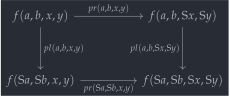
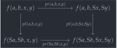

open import 1Lab.Prelude open import Data.Nat.Solver open import Data.Nat open import Data.Sum module Data.Int where
Integers🔗
The integers are what you get when you complete the additive monoid structure on the naturals into a group. In non-cubical Agda, a representation of the integers as a coproduct with one of the factors offset (to avoid having two zeroes) is adopted. In Cubical Agda we can adopt a representation much closer to a “classical” construction of the integers:
data Int : Type where diff : (x y : Nat) → Int quot : (m n : Nat) → diff m n ≡ diff (suc m) (suc n)
This is an alternative representation of the construction of integers as pairs where iff : An integer is an equivalence class of pairs of naturals, where is identified with , or, more type-theoretically, the integers are generated by the constructor diff which embeds a pair of naturals, and the path constructor quot which expresses that = .
This single generating path is enough to recover the “classical” quotient, which we do in steps. First, we… prove that that is :
zeroes : (n : Nat) → diff 0 0 ≡ diff n n zeroes zero = refl zeroes (suc n) = zeroes n ∙ quot _ _
Additionally, offsetting a difference by a fixed natural, as long as it’s done on both sides of the difference, does not change which integer is being represented: That is, considering all three naturals as integers, .
cancel : (a b n : Nat) → diff a b ≡ diff (n + a) (n + b) cancel a b zero = refl cancel a b (suc n) = cancel a b n ∙ quot _ _
As a final pair of helper lemmas, we find that if and differ by an absolute value of , then the values and are the same (as long as we fix the sign — hence the two lemmas). The generic situation of “differing by ” is captured by fixing a natural number and adding , because we have and .
offset-negative : (a b : Nat) → diff a (a + b) ≡ diff 0 b offset-negative zero b = refl offset-negative (suc a) b = diff (suc a) (suc (a + b)) ≡⟨ sym (quot _ _) ⟩≡ diff a (a + b) ≡⟨ offset-negative a b ⟩≡ diff 0 b ∎ offset-positive : (a b : Nat) → diff (a + b) a ≡ diff b 0 offset-positive zero b = refl offset-positive (suc a) b = diff (suc (a + b)) (suc a) ≡⟨ sym (quot _ _) ⟩≡ diff (a + b) a ≡⟨ offset-positive a b ⟩≡ diff b 0 ∎
Those two are the last two lemmas we need to prove the “if” direction of “naturals are identified in the quotient iff they represent the same difference”: the construction same-difference below packages everything together with a bow on the top.
same-difference : {a b c d : Nat} → a + d ≡ b + c → diff a b ≡ diff c d same-difference {zero} {b} {c} {d} path = sym ( diff c d ≡⟨ ap₂ diff refl path ⟩≡ diff c (b + c) ≡⟨ ap₂ diff refl (+-commutative b c) ⟩≡ diff c (c + b) ≡⟨ offset-negative _ _ ⟩≡ diff 0 b ∎ ) same-difference {suc a} {zero} {c} {d} path = sym ( diff c d ≡⟨ ap₂ diff (sym path) refl ⟩≡ diff (suc a + d) d ≡⟨ ap₂ diff (+-commutative (suc a) d) refl ⟩≡ diff (d + suc a) d ≡⟨ offset-positive _ _ ⟩≡ diff (suc a) 0 ∎ ) same-difference {suc a} {suc b} {c} {d} path = diff (suc a) (suc b) ≡⟨ sym (quot _ _) ⟩≡ diff a b ≡⟨ same-difference (suc-inj path) ⟩≡ diff c d ∎
In the other direction, we must be clever: we use path induction, defining a type family such that the fibre of over is . We can then use path induction to construct the map inverse to same-difference. On the way, the first thing we establish is a pair of observations about equalities on the natural numbers: and are equivalent conditions. This can be seen by commutativity and injectivity of the successor function, but below we prove it using equational reasoning, without appealing to commutativity.
module ℤ-Path where private variable a b m n c d : Nat encode-p-from : (a + n ≡ b + m) → (a + suc n ≡ b + suc m) encode-p-from {a = a} {n} {b} {m} p = a + suc n ≡⟨ +-sucr a n ⟩≡ suc (a + n) ≡⟨ ap suc p ⟩≡ suc (b + m) ≡˘⟨ +-sucr b m ⟩≡˘ b + suc m ∎ encode-p-to : (a + suc n ≡ b + suc m) → (a + n ≡ b + m) encode-p-to {a} {n} {b} {m} p = suc-inj (sym (+-sucr a n) ∙ p ∙ +-sucr b m)
We then define, fixing two natural numbers , the family by recursion on the integer . Recall that we want the fibre over to be , so that’s our pick. Now, the quot path constructor mandates that the fibre over be the same as that over — but this follows by propositional extensionality and the pair of observations above.
Code : ∀ (a b : Nat) (x : Int) → Type Code a b (diff c d) = a + d ≡ b + c Code a b (quot m n i) = path i where path : (a + n ≡ b + m) ≡ (a + suc n ≡ b + suc m) path = ua (prop-ext (Nat-is-set _ _) (Nat-is-set _ _) encode-p-from encode-p-to)
Hence, if we have a path , we can apply path induction, whence it suffices to consider the case where is literally_ the difference of and . To lift this into our Code fibration, we must show that , but this is exactly commutativity of addition on .
encode : ∀ (a b : Nat) (x : Int) → diff a b ≡ x → Code a b x encode a b x = J (λ x p → Code a b x) (+-commutative a b)
As a finishing touch, we give Int instances for
Number
and
Negative,
meaning that we can use positive and negative integer literals to denote
values of
Int.
instance Number-Int : Number Int Number-Int .Number.Constraint _ = ⊤ Number-Int .Number.fromNat n = diff n 0 Negative-Int : Negative Int Negative-Int .Negative.Constraint _ = ⊤ Negative-Int .Negative.fromNeg n = diff 0 n
Canonical representatives🔗
Initially, we note that the type of integers admits a surjection from
the type
,
given by sending each pair of naturals to their difference.
private difference-surjection : ∀ x → ∃[ (a , b) ∈ Nat × Nat ] (diff a b ≡ x) difference-surjection (diff x y) = inc ((x , y) , refl) difference-surjection (quot m n i) = is-prop→pathp (λ i → ∥_∥.squash {A = Σ[ (a , b) ∈ Nat × Nat ] (diff a b ≡ quot m n i)}) (inc ((m , n) , refl)) (inc ((suc m , suc n) , refl)) i
What we’ll show is that this surjection actually splits: Given an integer, we can find out what natural numbers it came from. Well, not quite: We can find a reduced representation of that difference. Namely, suppose we’re given the integer . We split by cases:
- If , then this is the same integer as ;
- If , then this is the same integer as ;
- If , then this is the same integer as .
A “canonical form” for an integer is a pair of natural numbers that represent (under diff) the same integer we started with. The canonicalisation procedure does the split we described above, appealing to a battery of three lemmas to prove the equality.
Canonical : Int → Type Canonical n = Σ[ x ∈ Nat ] Σ[ y ∈ Nat ] (diff x y ≡ n) canonicalise : (n : Int) → Canonical n canonicalise = go where lemma₁ : ∀ x y → x < y → diff 0 (y - x) ≡ diff x y lemma₂ : ∀ x y → y < x → diff (x - y) 0 ≡ diff x y lemma₃ : ∀ x y → x ≡ y → diff 0 0 ≡ diff x y work : ∀ x y → Canonical (diff x y) work x y with ≤-split x y ... | inl p = 0 , y - x , lemma₁ x y p ... | inr (inl p) = x - y , 0 , lemma₂ x y p ... | inr (inr p) = 0 , 0 , lemma₃ x y p
It remains to show that the procedure work respects the quotient. This is a truly gargantuan amount of work, and so it’s omitted from this page. You can unfold it below if you dare:
No, really, it’s quite ugly.
-- I commend your bravery in unfolding this <details>! These three -- lemmas are inductively defined on the natural numbers in a way that -- lets us prove that the paths they return respect the Int quotient -- without using that Int is a set (because we don't know that yet!) lemma₁ zero (suc y) p = refl lemma₁ (suc x) (suc y) p = lemma₁ x y p ∙ Int.quot x y lemma₂ (suc x) zero p = refl lemma₂ (suc x) (suc y) p = lemma₂ x y p ∙ Int.quot x y lemma₃ zero zero p = refl lemma₃ zero (suc y) p = absurd (zero≠suc p) lemma₃ (suc x) zero p = absurd (zero≠suc (sym p)) lemma₃ (suc x) (suc y) p = lemma₃ x y (suc-inj p) ∙ Int.quot x y abstract work-respects-quot : ∀ x y → PathP (λ i → Canonical (Int.quot x y i)) (work x y) (work (suc x) (suc y)) -- We split on (x, y) but also (1+x,1+y). This is obviously -- redundant to a human, but to Agda, we must do this: there is no -- link between these two splits. -- These first three cases basically mirror the definition of -- lemma₁, lemma₂, and lemma₃. They show that -- lemma₁₂₃ (suc x) (suc y) p ≡ lemma₁₂₃ (suc x) (suc y) p' ∙ Int.quot x y -- but mediating between SquareP, ··, and ∙. work-respects-quot x y with ≤-split x y | ≤-split (suc x) (suc y) ... | inl x<y | inl x<y' = Σ-pathp-dep refl $ Σ-pathp-dep refl $ transport (sym Square≡double-composite-path) $ double-composite refl _ _ ·· ∙-id-l _ ·· ap (λ e → lemma₁ x y e ∙ Int.quot x y) (≤-prop (suc x) y x<y x<y') ... | inr (inl x>y) | inr (inl x>y') = Σ-pathp-dep refl $ Σ-pathp-dep refl $ transport (sym Square≡double-composite-path) $ double-composite refl _ _ ·· ∙-id-l _ ·· ap (λ e → lemma₂ x y e ∙ Int.quot x y) (≤-prop (suc y) x x>y x>y') ... | inr (inr x≡y) | inr (inr x≡y') = Σ-pathp-dep refl $ Σ-pathp-dep refl $ transport (sym Square≡double-composite-path) $ double-composite refl _ _ ·· ∙-id-l _ ·· ap (λ e → lemma₃ x y e ∙ Int.quot x y) (Nat-is-set _ _ _ _) -- This *barrage* of cases is to handle the cases where e.g. (x < y) -- but (1 + x > 1 + y), which is "obviously" impossible. But Agda -- doesn't care about what humans think is obvious. ... | inl x<y | inr (inl x>y) = absurd (go x y x<y x>y) where go : ∀ x y → x < y → y < x → ⊥ go (suc x) (suc y) p q = go x y p q ... | inl x<y | inr (inr x≡y) = absurd (go x y x<y (suc-inj x≡y)) where go : ∀ x y → x < y → x ≡ y → ⊥ go zero (suc y) p q = absurd (zero≠suc q) go (suc x) (suc y) p q = go x y p (suc-inj q) ... | inr (inl x>y) | inl x<y = absurd (go x y x>y x<y) where go : ∀ x y → y < x → x < y → ⊥ go (suc x) (suc y) p q = go x y p q ... | inr (inr x≡y) | inl x<y = absurd (go x y x<y x≡y) where go : ∀ x y → x < y → x ≡ y → ⊥ go zero (suc y) p q = absurd (zero≠suc q) go (suc x) (suc y) p q = go x y p (suc-inj q) ... | inr (inl x>y) | inr (inr x≡y) = absurd (go x y x>y (suc-inj x≡y)) where go : ∀ x y → y < x → x ≡ y → ⊥ go (suc x) zero p q = absurd (zero≠suc (sym q)) go (suc x) (suc y) p q = go x y p (suc-inj q) ... | inr (inr x≡y) | inr (inl x>y) = absurd (go x y x≡y x>y) where go : ∀ x y → x ≡ y → y < x → ⊥ go (suc x) zero p q = absurd (zero≠suc (sym p)) go (suc x) (suc y) p q = go x y (suc-inj p) q go : ∀ n → Canonical n go (diff x y) = work x y go (Int.quot x y i) = work-respects-quot x y i
This immediately implies that the type of integers is a set, because it’s a retract of a set — namely !
instance abstract H-Level-Int : ∀ {n} → H-Level Int (2 + n) H-Level-Int = basic-instance 2 $ retract→is-hlevel 2 into from linv (hlevel 2) where into : (Nat × Nat) → Int into (x , y) = diff x y from : Int → Nat × Nat from x with canonicalise x ... | a , b , p = a , b linv : ∀ x → into (from x) ≡ x linv x with canonicalise x ... | a , b , p = p
Recursion🔗
If we want to define a map , it suffices to give a function which respects the quotient, in the following sense:
Int-rec : ∀ {ℓ} {X : Type ℓ} → (f : Nat → Nat → X) → (q : (a b : _) → f a b ≡ f (suc a) (suc b)) → Int → X Int-rec f q (diff x y) = f x y Int-rec f q (quot m n i) = q m n i
However, since can be a more general space, not necessarily a set, defining a binary operation can be quite involved! It doesn’t suffice to exhibit a function from which respects the quotient separately in each argument:
Int-rec₂ : ∀ {ℓ} {B : Type ℓ} → (f : Nat × Nat → Nat × Nat → B) → (pl : (a b x y : _) → f (a , b) (x , y) ≡ f (suc a , suc b) (x , y)) → (pr : (a b x y : _) → f (a , b) (x , y) ≡ f (a , b) (suc x , suc y))
In addition, we must have that these two paths
pl and pr are coherent. There are two
ways of obtaining an equality
(pl after pr and pr after
pl, respectively) and these must be homotopic:
→ (square : (a b x y : _) → Square (pl a b x y) (pr a b x y) (pr (suc a) (suc b) x y) (pl a b (suc x) (suc y))) → Int → Int → B
The type of square says that we need the following
square of paths to commute, which says exactly that pl ∙ pr
and pr ∙ pl are homotopic and imposes no further structure
on
1:
 

Int-rec₂ f p-l p-r sq (diff a b) (diff x y) = f (a , b) (x , y) Int-rec₂ f p-l p-r sq (diff a b) (quot x y i) = p-r a b x y i Int-rec₂ f p-l p-r sq (quot a b i) (diff x y) = p-l a b x y i Int-rec₂ f p-l p-r sq (quot a b i) (quot x y j) = sq a b x y i j
However, when the type
we are mapping into is a set, as is the case for the integers
themselves, the square is automatically satisfied, so we can give a
simplified recursion principle:
Int-rec₂-set : ∀ {ℓ} {B : Type ℓ} ⦃ iss-b : H-Level B 2 ⦄ → (f : Nat × Nat → Nat × Nat → B) → (pl : (a b x y : _) → f (a , b) (x , y) ≡ f (suc a , suc b) (x , y)) → (pr : (a b x y : _) → f (a , b) (x , y) ≡ f (a , b) (suc x , suc y)) → Int → Int → B Int-rec₂-set ⦃ iss-b ⦄ f pl pr = Int-rec₂ f pl pr square where abstract square : (a b x y : Nat) → PathP (λ i → pl a b x y i ≡ pl a b (suc x) (suc y) i) (pr a b x y) (pr (suc a) (suc b) x y) square a b x y = is-set→squarep (λ i j → hlevel 2) _ _ _ _
Furthermore, when proving propositions of the integers, the quotient is automatically respected, so it suffices to give the case for diff:
Int-elim-prop : ∀ {ℓ} {P : Int → Type ℓ} → ((x : Int) → is-prop (P x)) → (f : (a b : Nat) → P (diff a b)) → (x : Int) → P x Int-elim-prop pprop f (diff a b) = f a b Int-elim-prop pprop f (quot m n i) = is-prop→pathp (λ i → pprop (quot m n i)) (f m n) (f (suc m) (suc n)) i
There are also variants for binary and ternary predicates.
Int-elim₂-prop : ∀ {ℓ} {P : Int → Int → Type ℓ} → ((x y : Int) → is-prop (P x y)) → (f : (a b x y : Nat) → P (diff a b) (diff x y)) → (x : Int) (y : Int) → P x y Int-elim₂-prop pprop f = Int-elim-prop (λ x → Π-is-hlevel 1 (pprop x)) λ a b int → Int-elim-prop (λ x → pprop (diff a b) x) (f a b) int Int-elim₃-prop : ∀ {ℓ} {P : Int → Int → Int → Type ℓ} → ((x y z : Int) → is-prop (P x y z)) → (f : (a b c d e f : Nat) → P (diff a b) (diff c d) (diff e f)) → (x : Int) (y : Int) (z : Int) → P x y z Int-elim₃-prop pprop f = Int-elim₂-prop (λ x y → Π-is-hlevel 1 (pprop x y)) λ a b c d int → Int-elim-prop (λ x → pprop (diff a b) (diff c d) x) (f a b c d) int
A third possibility for elimination is granted to us by the canonicalisation procedure: By canonicalising and looking at the resulting minuend and subtrahend2, we can split on an integer based on its sign:
Int-elim-by-sign : (P : Int → Type) → (pos : ∀ x → P (diff x 0)) → (neg : ∀ x → P (diff 0 x)) → P (diff 0 0) → ∀ x → P x Int-elim-by-sign P pos neg zer x with inspect (canonicalise x) ... | (zero , zero , p) , q = subst P p zer ... | (zero , suc b , p) , q = subst P p (neg (suc b)) ... | (suc a , zero , p) , q = subst P p (pos (suc a)) ... | (suc a , suc b , p) , q = absurd (canonicalise-not-both-suc x (ap fst q) (ap (fst ∘ snd) q))
This procedure is useful, for instance, for computing absolute values:
abs : Int → Nat abs = Int-elim-by-sign _ (λ x → x) (λ x → x) zero _ : abs -10 ≡ 10 _ = refl
Algebra🔗
With these recursion and elimination helpers, it becomes routine to lift the algebraic operations from naturals to integers:
Successors🔗
The simplest “algebraic operation” on an integer is taking its successor. In fact, the integers are characterised by being the free type with an equivalence - that equivalence being “successor”.
sucℤ : Int → Int sucℤ (diff x y) = diff (suc x) y sucℤ (quot m n i) = quot (suc m) n i predℤ : Int → Int predℤ (diff x y) = diff x (suc y) predℤ (quot m n i) = quot m (suc n) i
The successor of is . Similarly, the predecessor of is . By the generating equality quot, we have that predecessor and successor are inverses, since applying both (in either order) takes to .
pred-sucℤ : (x : Int) → predℤ (sucℤ x) ≡ x pred-sucℤ (diff x y) = sym (quot x y) pred-sucℤ (quot m n i) j = quot-diamond m n i (~ j) suc-predℤ : (x : Int) → sucℤ (predℤ x) ≡ x suc-predℤ (diff x y) = sym (quot x y) suc-predℤ (quot m n i) j = quot-diamond m n i (~ j) sucℤ-is-equiv : is-equiv sucℤ sucℤ-is-equiv = is-iso→is-equiv (iso predℤ suc-predℤ pred-sucℤ) predℤ-is-equiv : is-equiv predℤ predℤ-is-equiv = is-iso→is-equiv (iso sucℤ pred-sucℤ suc-predℤ)
Addition🔗
_+ℤ_ : Int → Int → Int _+ℤ_ = Int-rec₂-set (λ { (a , b) (c , d) → diff (a + c) (b + d)}) (λ a b x y → quot _ _) (λ a b x y → quot _ _ ∙ ap₂ diff (sym (+-sucr _ _)) (sym (+-sucr _ _)))
Since addition of integers is (essentially!) addition of pairs of
naturals, the algebraic properties of
+
on the natural numbers automatically lift to properties about
_+ℤ_,
using the recursion helpers for props
(Int-elim-prop)
and the fact that equality of integers is a proposition.
+ℤ-associative : (x y z : Int) → (x +ℤ y) +ℤ z ≡ x +ℤ (y +ℤ z) +ℤ-zerol : (x : Int) → 0 +ℤ x ≡ x +ℤ-zeror : (x : Int) → x +ℤ 0 ≡ x +ℤ-commutative : (x y : Int) → x +ℤ y ≡ y +ℤ x
See the proofs here
+ℤ-associative = Int-elim₃-prop (λ x y z → hlevel 1) (λ a b c d e f → ap₂ diff (+-associative a c e) (+-associative b d f)) +ℤ-zerol = Int-elim-prop (λ x → hlevel 1) (λ a b → refl) +ℤ-zeror = Int-elim-prop (λ x → hlevel 1) (λ a b → ap₂ diff (+-zeror a) (+-zeror b)) +ℤ-commutative = Int-elim₂-prop (λ x y → hlevel 1) (λ a b c d → ap₂ diff (+-commutative a c) (+-commutative b d))
Inverses🔗
Every integer has an additive inverse, denoted , which is obtained by swapping the components of the pair. Since the definition of negate is very simple, it can be written conveniently without using Int-rec:
negate : Int → Int negate (diff x y) = diff y x negate (quot m n i) = quot n m i
The proof that is an additive inverse to follows, essentially, from commutativity of addition on natural numbers, and the fact that all zeroes are identified.
+ℤ-inverser : (x : Int) → x +ℤ negate x ≡ 0 +ℤ-inverser = Int-elim-prop (λ _ → hlevel 1) λ where a b → diff (a + b) (b + a) ≡⟨ ap₂ diff refl (+-commutative b a) ⟩≡ diff (a + b) (a + b) ≡⟨ sym (zeroes (a + b)) ⟩≡ diff 0 0 ∎ +ℤ-inversel : (x : Int) → negate x +ℤ x ≡ 0 +ℤ-inversel = Int-elim-prop (λ _ → hlevel 1) λ where a b → diff (b + a) (a + b) ≡⟨ ap₂ diff (+-commutative b a) refl ⟩≡ diff (a + b) (a + b) ≡⟨ sym (zeroes (a + b)) ⟩≡ diff 0 0 ∎
Since negate is precisely what’s missing for Nat to be a group, we can turn the integers into a group. Subtraction is defined as addition with the inverse, rather than directly on diff:
_-ℤ_ : Int → Int → Int x -ℤ y = x +ℤ negate y
Multiplication🔗
We now prove that the integers are a ring, i.e. that there is a multiplication operation with 1 as a left/right identity, which is associative, and additionally distributes over addition on both the left and the right. It’s also commutative — so is a commutative ring.
The definition of multiplication is slightly tricky: We use the binomial theorem. Pretend that is really , and expand that to : that’s our product. It remains to show that this respects the defining equation quot, which involves some nasty equations (you can see them in the types of l₁ and l₂ below) — but this can be done with the semiring solver.
_*ℤ_ : Int → Int → Int _*ℤ_ = Int-rec₂-set (λ { (a , b) (c , d) → diff (a * c + b * d) (a * d + b * c) }) (λ a b x y → same-difference (l₁ a b x y)) (λ a b x y → same-difference (l₂ a b x y)) where abstract l₁ : ∀ a b x y → a * x + b * y + (suc a * y + suc b * x) ≡ a * y + b * x + (suc a * x + suc b * y) l₁ a b x y = solve! l₂ : ∀ a b x y → a * x + b * y + (a * suc y + b * suc x) ≡ a * y + b * x + (a * suc x + b * suc y) l₂ a b x y = solve!
We omit the proofs of the arithmetic identities below since they are essentially induction + calling the semiring solver.
abstract *ℤ-associative : ∀ x y z → (x *ℤ y) *ℤ z ≡ x *ℤ (y *ℤ z) *ℤ-commutative : ∀ x y → x *ℤ y ≡ y *ℤ x *ℤ-idl : ∀ x → 1 *ℤ x ≡ x *ℤ-idr : ∀ x → x *ℤ 1 ≡ x *ℤ-distrib-+ℤ-l : ∀ x y z → x *ℤ (y +ℤ z) ≡ (x *ℤ y) +ℤ (x *ℤ z) *ℤ-distrib-+ℤ-r : ∀ x y z → (y +ℤ z) *ℤ x ≡ (y *ℤ x) +ℤ (z *ℤ x)
In the diagram, we write for
suc x.↩︎keeping in mind that the image of canonicalise is restricted to pairs of the form , , or ↩︎